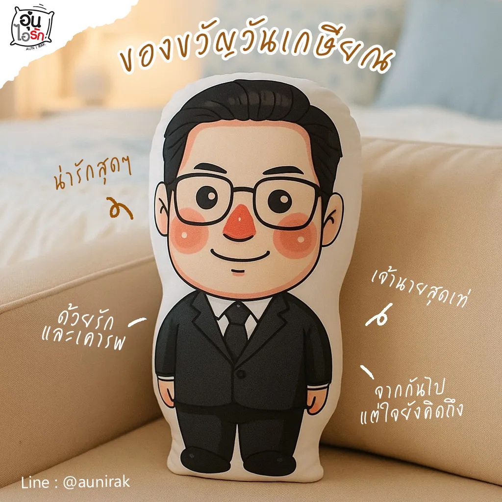
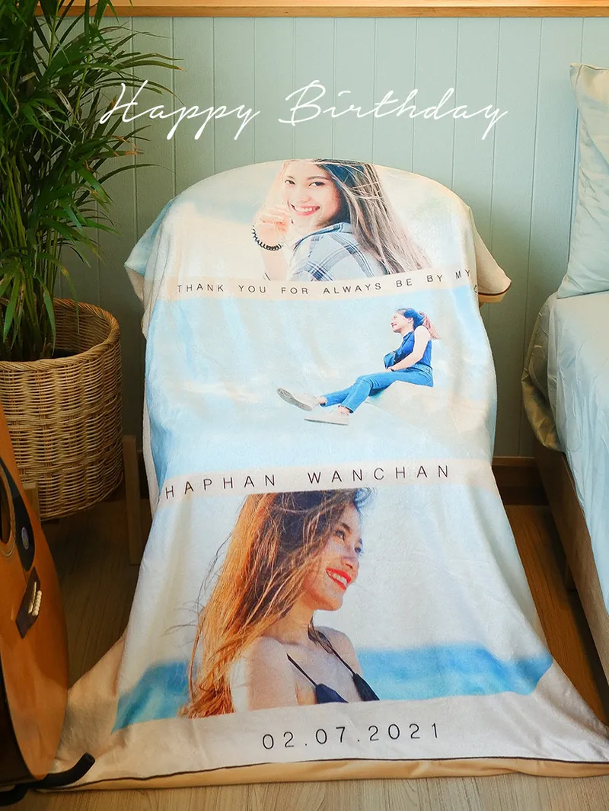
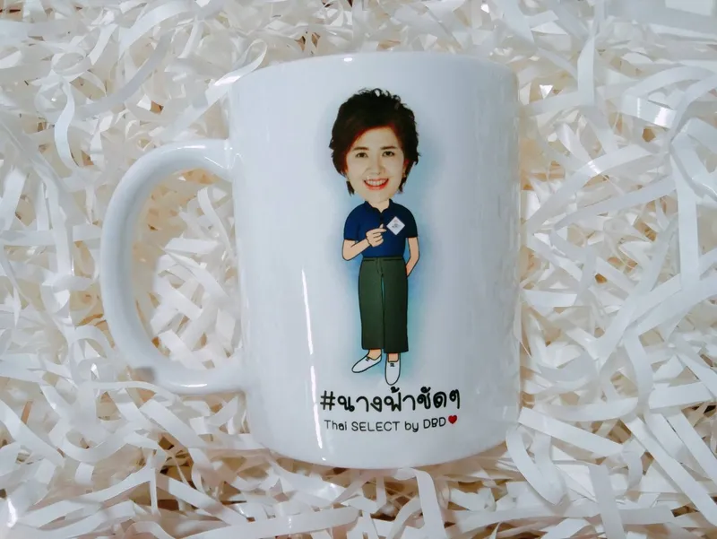
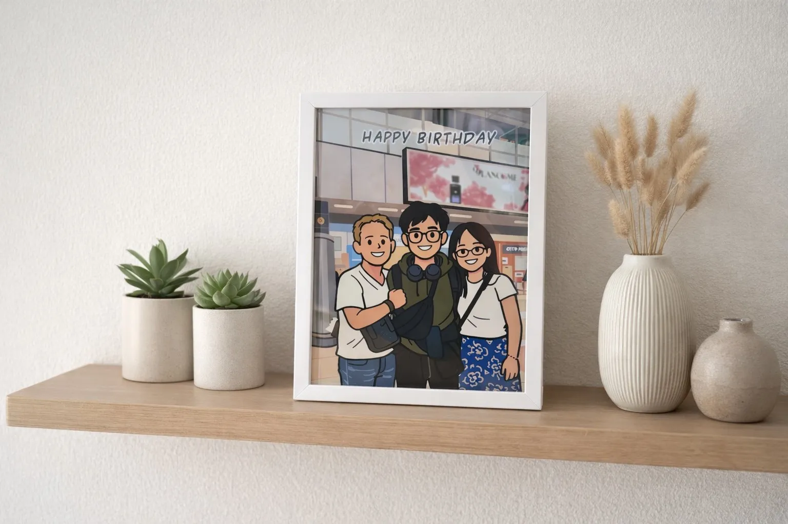
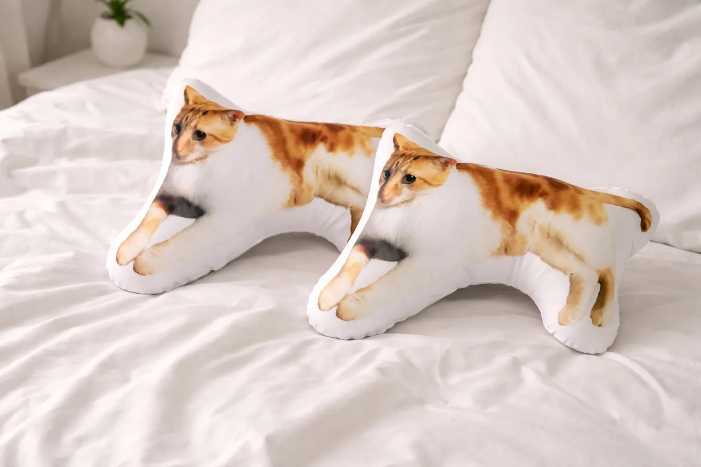

ของขวัญวันเกิด 2026: 7 ไอเดียพิเศษไม่ซ้ำใคร พร้อมคำอวยพรวันเกิด 15 แบบ
วันเกิดเวียนมาทุกปี แต่คำถามเดิมไม่เคยหาย — ของขวัญวันเกิดปีนี้ให้อะไรดีที่ไม่ใช่เค้กกับกระเช้า? เคล็ดลับจากการผลิตของขวัญมาหลายพันชิ้นของร้านคือ ของที่คนรับจำได้นานที่สุดไม่ใช่ของแพงที่สุด แต่คือของที่มีหน้าเขา ชื่อเขา หรือเรื่องราวของเขาอยู่บนนั้น บทความนี้รวม 7 ไอเดียของขวัญวันเกิดสั่งทำจากรูปถ่าย พร้อมคำอวยพรเขียนการ์ดให้เสร็จค่ะ
1. หมอนไดคัทหน้าเขา — เซอร์ไพรส์ที่ได้เสียงกรี๊ดแน่นอน

ไอเดียที่เรียกเสียงฮือฮาในปาร์ตี้วันเกิดได้เสมอคือหมอนไดคัทตัดตามรูปทรงหน้าหรือทั้งตัวของเจ้าของวันเกิด ส่งรูปจากมือถือมารูปเดียว เราตัดพื้นหลังและเย็บเป็นหมอนเหมือนย่อส่วนเขามาตั้งไว้ จะใช้รูปจริงหรือให้วาดเป็นการ์ตูนก่อนก็ได้ เริ่มเพียง 333 บาท สั่งใบเดียวก็ผลิตค่ะ
2. ผ้าห่ม Happy Birthday — อุ่นทั้งตัว อุ่นทั้งใจ

ผ้าห่มสกรีนรูปเต็มผืนพร้อมคำว่า Happy Birthday ชื่อ และวันเกิดของเขา เป็นของขวัญชิ้นใหญ่ที่ได้ใช้จริงทุกคืน ผ้านาโนสเปนเด็กซ์นุ่มลื่น ซักเครื่องได้ และมาพร้อมกล่องของขวัญกับการ์ดพร้อมมอบทันที ขนาดยอดนิยม L 100×140 ซม. 990 บาท (เริ่มต้น 690 บาท)
3. หมอนอิงสกรีนรูป — งบไม่บานแต่ดูตั้งใจ

งบหลักร้อยแต่อยากได้ของที่มีความหมาย หมอนอิงสกรีนรูป 15×15 นิ้ว เริ่ม 399 บาท ตอบโจทย์สุด ใส่รูปเดี่ยว รูปคู่ หรือรูปรวมแก๊งเพื่อน พร้อมข้อความวันเกิดด้านหลัง (+100 บาท) เคล็ดลับ: สั่ง 2 ใบเหลือใบละ 350 บาท แบ่งกันคนละใบกับเจ้าของวันเกิดได้เลย
4. แก้วสกรีนรูปกับข้อความ — ใช้ทุกวัน เห็นทุกวัน

แก้วสกรีนรูปคือของขวัญวันเกิดสายปฏิบัติ — ได้ใช้ทุกเช้า แก้วมัคเริ่ม 200 บาท หรืออัปเกรดเป็นทัมเบลอร์ทรงสตาร์บัค/ทรง Yeti 690 บาท ฟรีหลอดสแตนเลส ใส่รูป ชื่อ และข้อความอวยพรได้ครบ ออกแบบให้ฟรีค่ะ
5. กรอบรูปภาพวาดการ์ตูน — ของตั้งโชว์ที่เก็บความทรงจำ

เอารูปที่ชอบที่สุดของเขามาให้เราวาดเป็นภาพการ์ตูน ใส่กรอบพร้อมข้อความและวันเกิด ได้ของตั้งโชว์บนโต๊ะทำงานหรือหัวเตียงที่มองทีไรก็ยิ้ม เหมาะมากกับของขวัญให้แฟนและเพื่อนสนิท ส่งรูปมาประเมินราคาฟรีทางไลน์
6. หมอนไดคัทสัตว์เลี้ยง — สำหรับทาสแมวทาสหมา

ถ้าเจ้าของวันเกิดเป็นทาสแมวหรือทาสหมา ไม่มีอะไรชนะหมอนไดคัทรูปน้องสัตว์เลี้ยงของเขาได้เลย เอารูปน้องมาเย็บเป็นหมอนตัวนุ่ม ๆ ให้กอดได้ทุกคืน เป็นหมวดที่ลูกค้ากลับมาสั่งซ้ำบ่อยที่สุดของร้านค่ะ
7. เซ็ตของขวัญจัดคู่ — จัดเต็มให้คนพิเศษ
อยากจัดใหญ่ให้คนสำคัญ จับคู่เป็นเซ็ตได้เลย เช่น หมอนไดคัท + แก้วสกรีน หรือผ้าห่ม + หมอนอิงรูปเดียวกัน ธีมเดียวกันทั้งเซ็ต ดูตั้งใจและคุ้มกว่าซื้อแยก สั่งหลายชิ้นมีราคาพิเศษ แจ้งงบที่มีมาทางไลน์ เราช่วยจัดเซ็ตให้พอดีงบค่ะ
คำอวยพรวันเกิด 15 แบบ — เขียนการ์ดหรือสกรีนลงของขวัญ
- สุขสันต์วันเกิดนะ ขอให้มีความสุขมาก ๆ สุขภาพแข็งแรง
- HBD! ขอให้ปีนี้เป็นปีที่ดีที่สุดของแก
- ขอให้คิดสิ่งใดสมปรารถนา เงินทองไหลมาเทมา
- อายุมากขึ้นอีกปี ขอให้มีแต่เรื่องดี ๆ เข้ามานะ
- สุขสันต์วันเกิดคนเก่ง ขอให้เก่งและปังกว่าเดิม
- ขอให้สุขภาพแข็งแรง อยู่เป็นที่รักของทุกคนไปนาน ๆ
- วันเกิดปีนี้ขอให้ยิ้มเยอะ ๆ ทุกข์น้อย ๆ นะ
- ขอบคุณที่เกิดมาเป็นคนสำคัญของเรา สุขสันต์วันเกิดนะ
- ขอให้ความฝันทุกอย่างเป็นจริงในปีนี้
- สุขสันต์วันเกิดแม่/พ่อ ขอให้อยู่กับลูกไปนาน ๆ นะ
- แก่แค่ตัวเลข หัวใจยังวัยรุ่นเสมอ HBD!
- ขอให้เจอแต่คนดี ๆ งานดี ๆ และเรื่องดี ๆ ตลอดปี
- สุขสันต์วันเกิดที่รัก ขอบคุณที่อยู่ข้างกันเสมอ
- ปีนี้ขอให้รวย ปีหน้าขอให้รวยกว่าเดิม
- ขอให้ทุกวันของเธอสดใสเหมือนวันเกิดวันนี้
สรุป — ของขวัญวันเกิดที่ดี คือของที่มี "เขา" อยู่ในนั้น
ไม่ว่างบเท่าไหร่ หลักการเดียวกัน: ของขวัญที่สั่งทำจากรูปของเจ้าของวันเกิดเองจะพิเศษกว่าของสำเร็จรูปเสมอ เพราะเป็นชิ้นเดียวในโลก ร้านอุ่นไอรักออกแบบและผลิตเองทุกขั้นตอน ส่งแบบให้ดูก่อนผลิต เสร็จใน 3–4 วัน มีรูปหนึ่งรูปกับวันเกิดหนึ่งวันก็เริ่มได้เลยค่ะ
ส่งรูปมาทาง LINE ให้เราทำแบบให้ดูฟรี
บอกวันเกิดที่ต้องได้ของ เดี๋ยวทีมงานจัดคิวให้ทันแน่นอนค่ะ
แอด LINE @aunirakคำถามที่พบบ่อยเรื่องของขวัญวันเกิด
ของขวัญวันเกิดให้อะไรดีไม่ซ้ำใคร
ของที่สั่งทำจากรูปถ่ายของเขาเอง เช่น หมอนไดคัทหน้าเขา ผ้าห่ม Happy Birthday แก้วสกรีนรูป หรือกรอบรูปภาพวาด เป็นชิ้นเดียวในโลกที่ใครก็ซื้อตามไม่ได้ค่ะ
ควรสั่งล่วงหน้ากี่วัน
อย่างน้อย 5–7 วันก่อนวันเกิด (ผลิต 3–4 วันหลังยืนยันแบบ บวกจัดส่ง) งานด่วนทักไลน์มาคุยก่อนได้ค่ะ
มีรูปแค่รูปเดียวทำได้ไหม
ได้ค่ะ รูปจากมือถือรูปเดียวก็เริ่มงานได้ เราตัดพื้นหลัง แต่งรูป หรือวาดเป็นการ์ตูนให้ และส่งแบบให้ดูก่อนผลิตทุกชิ้นค่ะ
อ่านต่อ / สินค้าที่เกี่ยวข้อง
บทความ: ของขวัญวันเกษียณ + คำอวยพร 20 แบบ
บทความ: ของขวัญรับปริญญา ไม่ซ้ำใคร
บทความ: ของขวัญแต่งงาน ซึ้งใจคู่บ่าวสาว
หมอนไดคัท เริ่ม 333.- · หมอนอิงสกรีนรูป เริ่ม 399.- · ผ้าห่มสกรีนรูป เริ่ม 690.- · แก้วสกรีน เริ่ม 200.- · กรอบรูปการ์ตูน